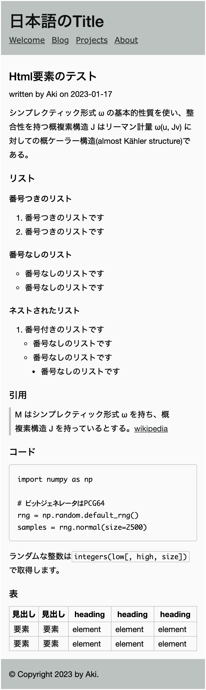

ここでは記事ページの表示にかかわるHtml要素のスタイルの記述と、記事ページ外のレイアウト調整を行います。
リストや引用など、記事内で利用するHtml要素のスタイルをbase.cssへ記述します。
:root {
/* 省略 */
--font-code: Inconsolata, Monaco, Consolas, "Courier New", Courier, system-ui, monospace;
--gray: #bcc2bf; /* --gray-3 */
}
/* 省略 */
a {
color: inherit;
}
hr {
background: var(--gray);
height: 1px;
border: 0;
}
ul, ol {
padding: 0 0 0 var(--spacing-4);
margin: var(--spacing-1) 0;
}
ul {
list-style-type: circle;
}
ul ul {
list-style-type: disc;
}
ul ul,
ol ol,
ul ol,
ol ul {
padding: 0 0 0 var(--spacing-2);
}
blockquote {
border-left: var(--spacing-1) solid var(--gray);
margin-left: 0;
padding: 0 0 0 var(--spacing-1);
}
code {
font-family: var(--font-code);
font-size: 0.875rem;
}
p code {
border: solid 1px var(--gray);
border-radius: 2px;
padding: 1px 4px;
}
pre {
line-height: 1.25;
border: solid 1px var(--gray);
border-radius: 4px;
margin: var(--spacing-2) 0;
padding: var(--spacing-2);
overflow-x: scroll;
}
table {
width: 100%;
border-collapse: collapse;
}
table, td, th {
border: 1px solid var(--gray);
}
th {
text-align: center;
}
td {
padding: 0 var(--spacing-1);
}
前回のサンプル記事を見ると、ヘッダーと記事タイトルの間や、投稿日付の上下のスペースが少し広すぎるようです。heading要素のmarginや、p要素のline-heightがレイアウトに影響しているので修正します。
/* layout adjustment */
div.page h2:first-child {
margin-top: var(--spacing-2);
}
.meta {
line-height: 1;
}
Html要素の表示を確認するため、ブログに新規記事を作成します。タイトルを「tml要素のテスト」とし、記事を下記のbodyからコピーして貼り付けます。（文章はダミー文です。）
Html要素のテスト
シンプレクティック形式 ω の基本的性質を使い、整合性を持つ概複素構造 J はリーマン計量 ω(u, Jv) に対しての概ケーラー構造(almost Kähler structure)である。
### リスト
#### 番号つきリスト
1. 番号つきのリストです
2. 番号つきのリストです
#### 番号なしリスト
- 番号なしのリストです
- 番号なしのリストです
#### ネストしたリスト
1. 番号付きのリストです
- 番号なしのリストです
- 番号なしのリストです
- 番号なしのリストです
### 引用
>M はシンプレクティック形式 ω を持ち、概複素構造 J を持っているとする。[wikipedia](https://ja.wikipedia.org/wiki/%E6%A6%82%E8%A4%87%E7%B4%A0%E6%A7%8B%E9%80%A0)
### コード
#### normalize.py
<pre><code>import numpy as np
# ビットジェネレータはPCG64
rng = np.random.default_rng()
samples = rng.normal(size=2500)
</code></pre>
webpackに<code>mini-css-extract-plugin</code>を追加します。
### 表
|見出し|見出し|heading|heading|heading|
|---|---|---|---|---|
|要素|要素|element|element|element|
|要素|要素|element|element|element|
